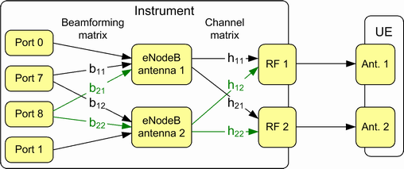
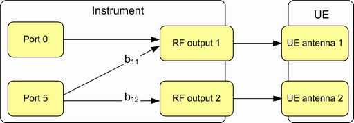

For transmission schemes with beamforming, beamforming is applied to antenna ports with UE-specific signals. For cell-specific signals, there is no beamforming.
The used ports depend on the transmission scheme and on the number of beamforming layers. In general, the antenna ports 0 and 1 can be used by a transmission scheme for cell-specific signals. The antenna ports 5, 7 and higher can be used for UE-specific signals.
The coefficients of a beamforming matrix are similar to the coefficients of a channel matrix. They are complex coefficients, have a magnitude and a phase and define an amplitude response and a phase response.
For TM 8, there is a beamforming matrix and a channel matrix. They are independent and can have different coefficients. Without fading, you can configure both matrices.
The following example visualizes the matrices for TM 8 with dual-layer beamforming.

For TM 7, there is only a beamforming matrix. The following example shows a 1x2 matrix for TM 7 with single-layer beamforming. Port 0 is in this example mapped to only one RF output. You can also map it to both RF outputs.

For transmission mode 9, you do not configure a beamforming matrix. Instead, you define the beamforming via the number of TX antennas and one or two precoding matrix indices.